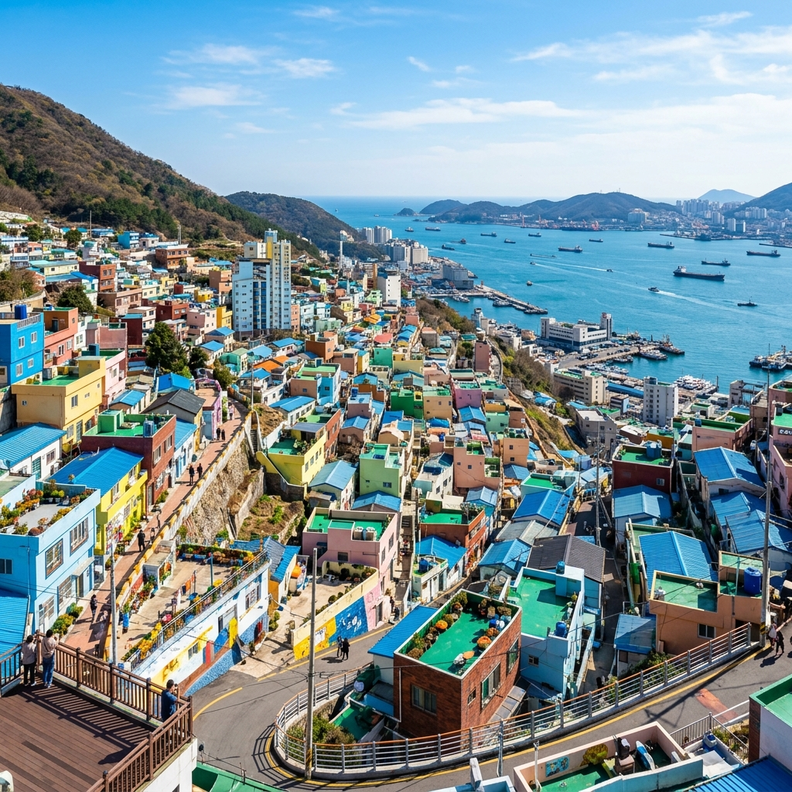

行程時間表
09:30 - 10:00
無痛攻頂
早上搭乘大型計程車，直接開到「甘川文化村主入口（頂端）」，完全不用爬坡，省下全部的腳力！
10:00 - 12:30
甘川文化村｜分流大作戰
🏃 動態探索 (爸爸/女兒)
購買集章地圖，往下穿梭繽紛的小巷弄，尋找印章與小王子相伴拍照，一路解鎖破關！
☕ 悠閒拍照組 (老婆＆媽媽＆舅媽)
停留在入口最平坦的主街逛文創小店，接著直接進入景觀咖啡廳吹冷氣，悠閒地俯瞰彩色房屋全景，拍美照等探險小隊凱旋歸來。

13:00 - 14:30
14:30 - 17:30
南浦洞商圈血拚
南浦洞光復路商圈室內逛街大軍出動！主攻樂天百貨（光復店）與 Olive Young 旗艦店盡情採購。如果中途想看風景，直接搭旁邊的「免費手扶梯」直達龍頭山公園，完全不耗體力。
18:00 - 19:30
📌 貼心小提醒
甘川文化村的巷子像迷宮一樣，大家記得手機保持有電、開好定位，走散了就用 Naver Map 導航到入口集合點會合。防曬和水一定要帶夠，村子裡有些角落沒有遮蔽。南浦洞逛街時護照帶著，滿額可以直接辦退稅喔！